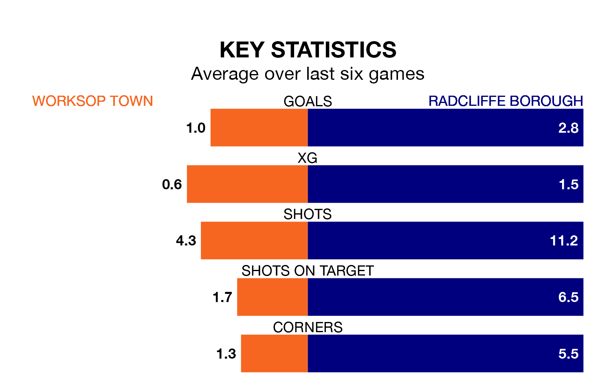

Two of the Northern Premier League's top sides face each other at the Windsor Food Service Stadium in Saturday's kick-off, when fourth-placed Worksop Town host table-topping Radcliffe Borough.
Worksop have picked up 15 wins and five draws from 28 games so far this season, and sit 16 points below the visitors going into the 3pm match.
The Boro, meanwhile, have won 22, picking up 66 points.
With 79 goals in 28 games so far this season, Radcliffe are the league's highest scorers with 2.8 goals per game. And they are conceding fewer than average, letting in 40 goals at a rate of 1.4 per game.
Worksop are also above average scorers, with 2.0 goals per game, compared to a league average of 1.7. They have conceded 1.1 goals per game.
Town are in mixed form in the Northern Premier League, with three wins and three losses from their last six games.
With five wins and one loss over that period, Borough's form is much better – they have taken 15 points from 18, compared to the home side's nine.
Worksop's last match was on February 3, a 1-0 win against Ashton United.
Radcliffe beat United of Manchester 1-0 last time out, on Tuesday.
Updated: 11:43 (UTC), 08/02/24